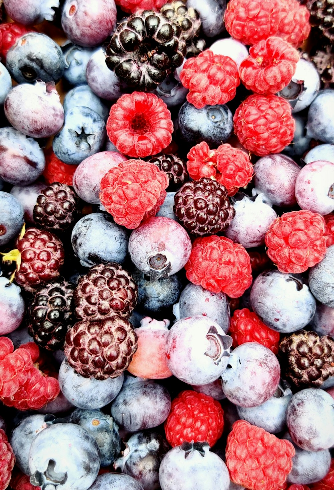
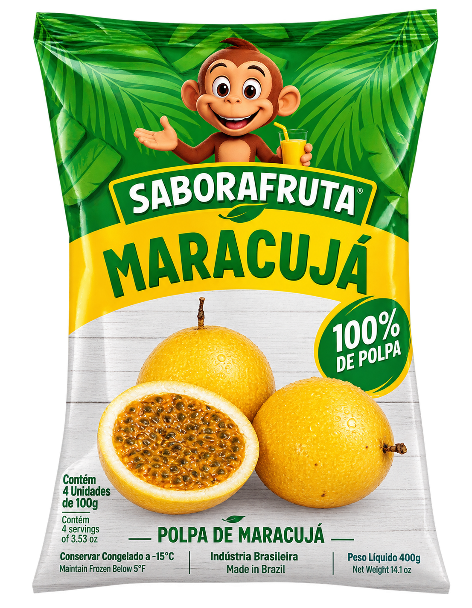
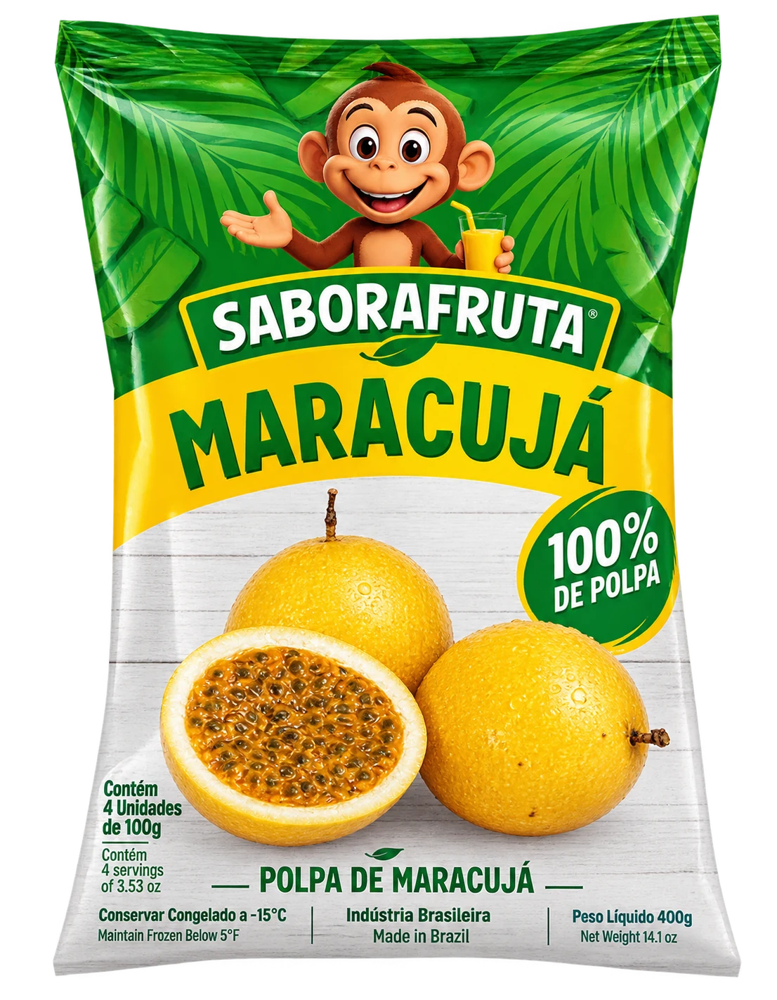
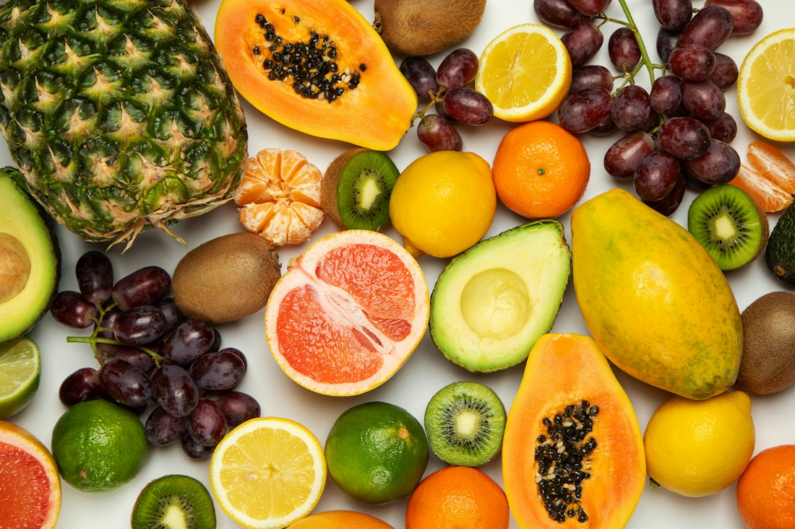
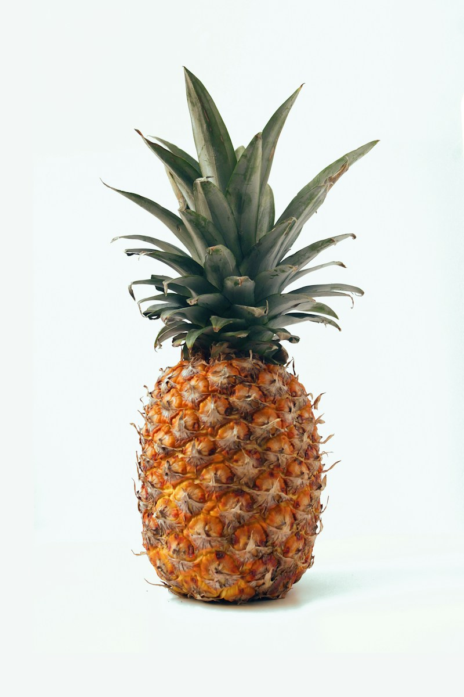
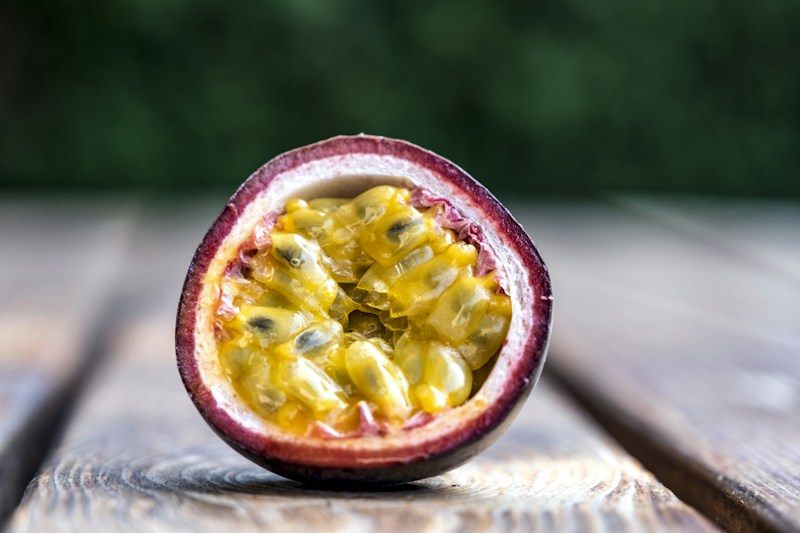
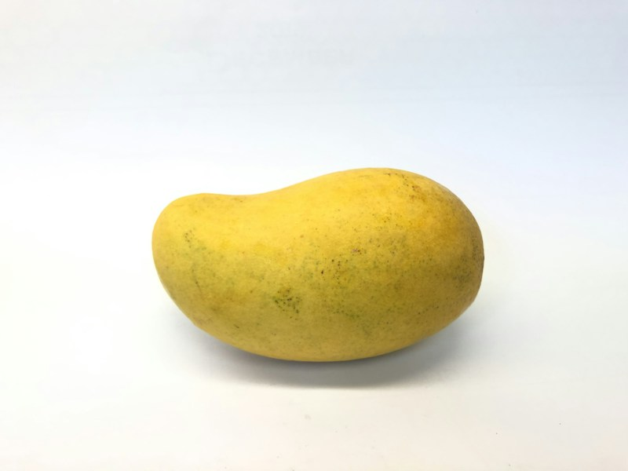
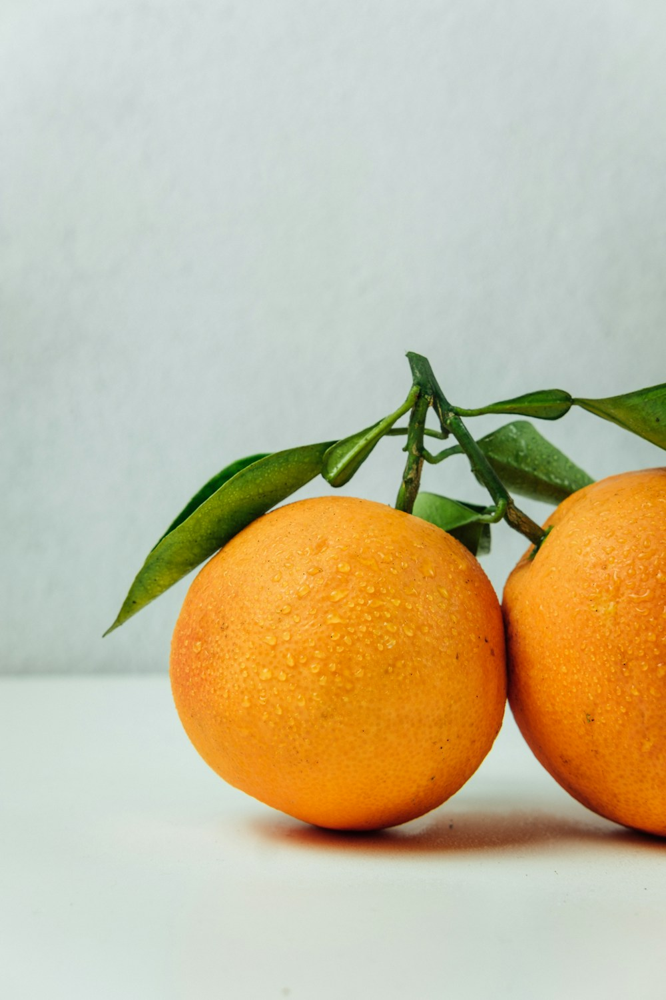
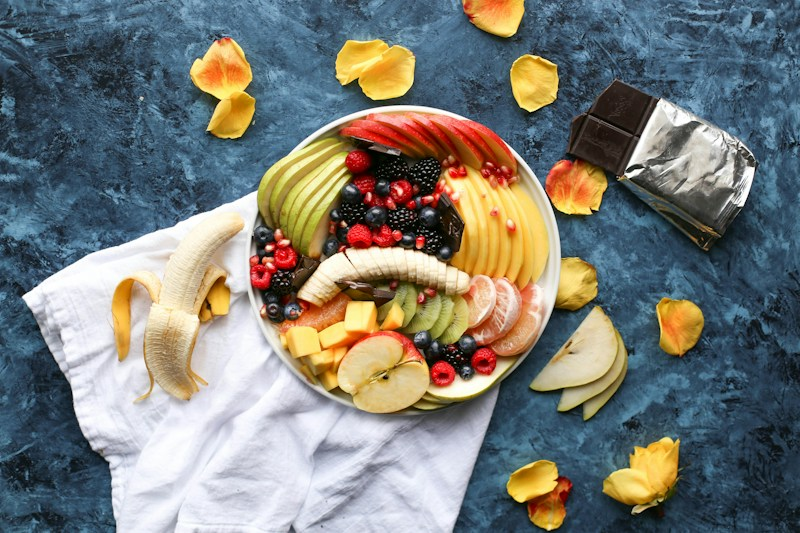
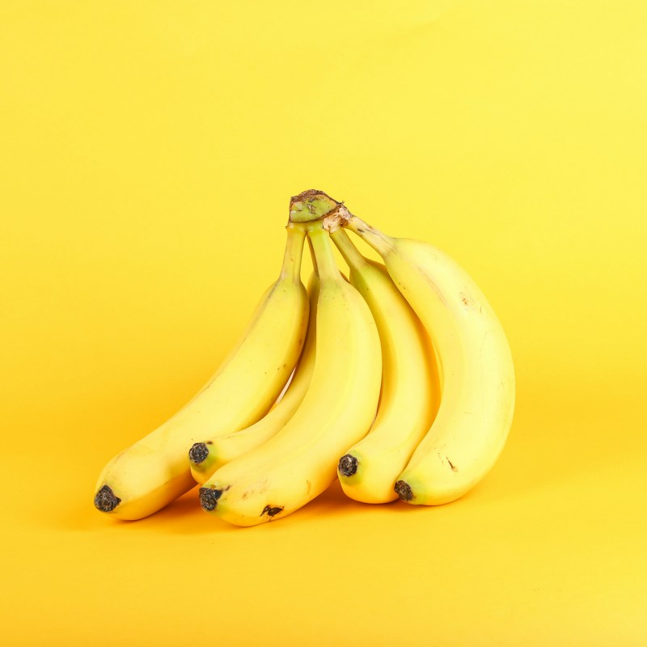

POLPA DE FRUTA✳
Polpas 100% naturais e sem adição de açúcar. Qualidade, sabor e praticidade para deixar o seu dia mais gostoso.

SABOR A FRUTA
FRUTAS QUE CONTAM HISTÓRIAS✳Prazer, somos a Sabor a Fruta
Somos uma distribuidora de polpas de frutas em Natal, no Rio Grande do Norte. Levamos mais praticidade para a rotina sem abrir mão do sabor da fruta.
Nossas polpas são 100% naturais e sem adição de açúcar: é só escolher seu sabor e aproveitar.
Conheça nosso jeito ↗Polpas de frutas
Da goiaba ao maracujá, tem sabor de fruta
para deixar seus momentos mais gostosos.

POLPA DE FRUTA✳

POLPA DE FRUTA
POLPA DE FRUTA
POLPA DE FRUTAConheça também os sabores cajá, caju e maracujá no nosso Instagram. Consulte a disponibilidade.
NOSSO JEITO DE FAZER
Frutas de verdade, sem adição de açúcar. Um sabor naturalmente especial em cada polpa.
Conheça nosso cuidado ↗Nosso jeito de fazer
A gente escolhe fazer bem-feito — do respeito pelas frutas até o sabor que chega até você.
Polpas naturais, com o sabor característico de cada fruta.
Uma variedade de sabores para cada gosto e cada momento.
A fruta é a protagonista do sabor das nossas polpas.
Polpas de frutas para a sua rotina em Natal, RN.
Nosso cantinho tropical

FRUTA, COR E ALEGRIA
UM BRINDE AOS BONS MOMENTOS
DA NATUREZA, COM CARINHOA felicidade
tem gosto de fruta.
Tem conversa boa por aqui
Fale com a gente para conhecer nossos sabores e consultar a disponibilidade das polpas.